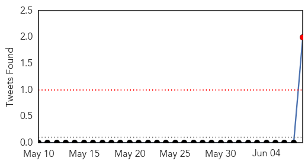
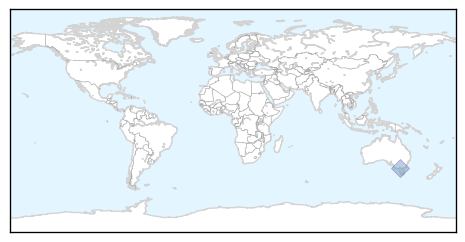
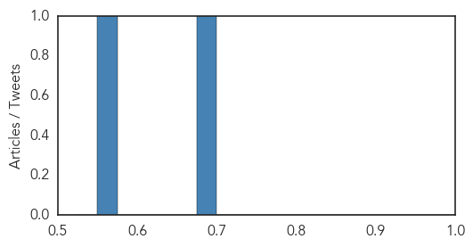
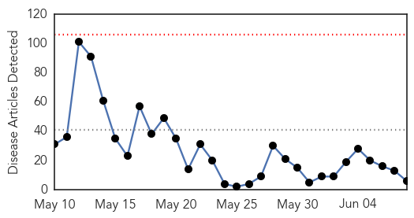
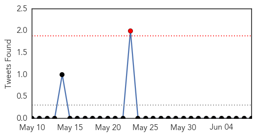

Swine Flu
30-Day Web Trend
2 alerts, 0 warnings
30-Day Twitter Trend
1 alerts, 0 warnings

Article Locations
Article Confidences
Top Articles:
-
No articles found for Jun 08, 2014
Top Tweets:
- 0.853
- Statistic Sunday: 36,991 individuals were infected with H1N1 Swine Flu in Australia during the 2009 Pandemic. http://t.co/fApAeSERYp
- 0.752
- Flu in Culture: Sneeze is an internet video game first released in 2009 and inspired by the 2009 swine flu outbreak. http://t.co/hbeCZuY2cK
MERS
30-Day Web Trend
0 alerts, 0 warnings

30-Day Twitter Trend
1 alerts, 0 warnings

Article Locations
Article Confidences

Top Articles:
- 0.999
- WHO experts find hospital breaches worsened MERS outbreak in UAE
- 0.999
- WHO Experts Find Hospital Breaches Worsened MERS Outbreak In UAE
- 0.999
- Saudi Arabia Eyes Camel Testing as MERS Cases Increase
- 0.997
- Pilgrims undeterred by MERS?pour into Saudi
- 0.996
- WHO concludes a MERS-CoV risk assessment mission in the United Arab Emirates
- 0.968
- Pilgrims pour into Saudi Arabia..., SahilOnline News
Top Tweets:
-
No tweets found for Jun 08, 2014